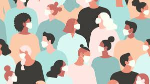
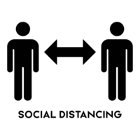
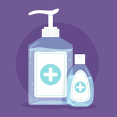
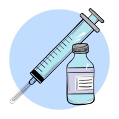
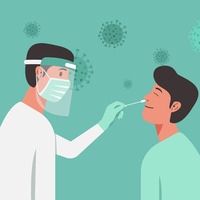

Protective Strategies during a global pandemic is key if you want to be safe. Here are 5 that I thought are the main protective Strategies used during the time of the Pandemic of COVID-19. This helps by not breathing in COVID-19 bacteria in the air and stop the spread of the virus.
Using MasksMasks are one of the more common protective Strategiest that you would've probably had to use if you lived in 2020. These were a big part of COVID-19 Protective Strategies and you might have some masks around your house.  |
Social DistancingTo Stop the spead of COVID-19 the government enforced 1.5m of Social Distancing as COVID-19 is highly contagious with close contact with the infected. This helps by minimising the chance of being in close contact with an infected person if they are not staying home even with the symptoms.  |
Hand Sanitiser/Hand WashingHand Sanitiser is basically portable soap but you also don't need water. This is very handy to have if you have touched something that a infected person have touched thus implying more so that this virus was a highly contagious speciemen. But nothing beats hand washing. Hand Washing get all bacteria off your hands and helps your immune system to any disease including COVID. This helps by minimising the chance for the COVID disease to go through your hand and go to your body and giving you a disease. Instead the bacteria can be washed away with the use of soap and water.  |
VaccinationsIn the late period of COVID-19 Pfizer and Moderna have produced COVID-19 vaccines that have been endorsed by the Government. People should use Vaccines to minimise their chance of getting Covid-19.  |
RAT/COVID TestsRAT (Rapid Antigen Test) are tests that test you for COVID through mucus. There is also a PCR test which usually done at a COVID testing Clinic compared to the more portable but less reliable RAT. Both the PCR tests and RAT are both great protective Strategies to minimise the chances of affecting other people. This might not be a protective strategy for yourself but it's protecting others around you from getting it if you by chance have it.  |